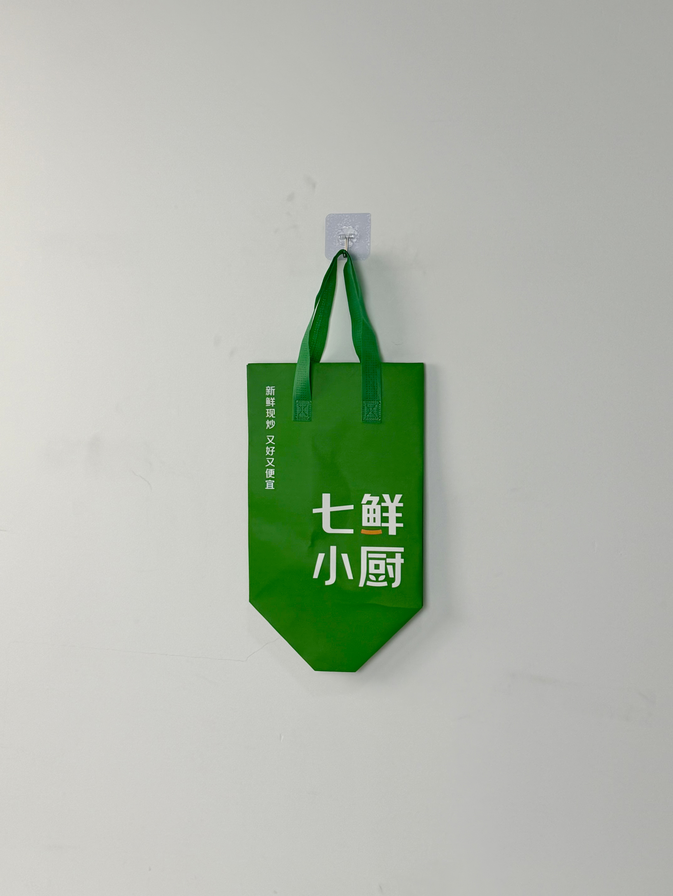

A bold green non-woven insulated tote designed for QiXian Kitchen, a Chinese fast-casual restaurant chain, featuring clean typographic branding and a geometric base optimized for boxed-meal delivery stability.

QiXian Kitchen is a Chinese fast-casual dining chain specializing in freshly stir-fried dishes served at accessible price points. Operating primarily in tier-2 and tier-3 cities, the brand has built a loyal customer base through its promise of "freshly cooked, delicious, and affordable" meals. With delivery platforms like Meituan and Ele.me driving over 50% of revenue, QiXian Kitchen needed thermal packaging that would preserve food quality during the 20-30 minute last-mile window while reinforcing brand trust at the customer's door.
In our market, customers judge quality before they taste the food. If the bag looks cheap, they assume the meal is cheap. We needed packaging that signaled freshness and care.
The project represented a strategic upgrade from generic white plastic bags to branded reusable thermal carriers. For a chain operating on thin margins, this investment in packaging quality signaled a long-term commitment to customer experience over pure cost minimization.
The design philosophy embraced radical simplicity. Rather than competing with delivery-platform aesthetics through complex graphics, QiXian Kitchen opted for a single bold color field with clean white typography. The result is a bag that reads as confident and modern — qualities that transfer directly to brand perception.
High-visibility green ensures instant brand recognition in crowded delivery racks and apartment lobbies.
Oversized Chinese characters "七鲜小厨" paired with the brand promise "新鲜现炒 又好又便宜" for immediate messaging.
Angled bottom panels create a stable footprint that prevents tipping during scooter and bicycle delivery transport.
Single-color print on colored substrate minimizes unit cost while delivering maximum visual impact for franchise-scale deployment.
The bag was specified for the dual demands of Chinese food delivery: thermal retention for rice-and-dish combinations and mechanical stability for stacked transport on electric scooters. Every parameter was selected to balance performance with the cost constraints of a high-volume fast-casual chain.
| Parameter | Specification | Test Standard |
|---|---|---|
| Thermal Retention | > 55°C for 25 min (25°C ambient) | Internal Protocol |
| Load Capacity | 5 kg | ASTM D5265 |
| Water Resistance | Grade 3 (spray test) | AATCC 22 |
| Seam Strength | > 25 N/cm | ASTM D1683 |
Fast-casual chains in China operate on aggressive expansion timelines, requiring packaging suppliers capable of rapid scaling. The following five-stage production workflow was designed to deliver 100,000 units within 30 days of artwork approval.
Green non-woven PP fabric produced via color-masterbatch extrusion for batch consistency across 100,000+ units.
Automatic flatbed screen press with opaque white plastisol. Flash curing at 170°C prevents dye migration.
Three-layer composite: printed non-woven face / 3mm EPE foam / aluminum-PE barrier, hot-roll laminated.
Angled bottom panels cut with ultrasonic sealing. Pre-scored fold lines ensure consistent base geometry.
Double-needle lockstitch assembly. Handles reinforced with box-X stitching. AQL 2.5 general inspection.
The thermal tote was rolled out across QiXian Kitchen's 200+ location network in Eastern China, replacing generic plastic delivery bags with branded insulated carriers. Deployment timing aligned with the brand's regional marketing campaign emphasizing "freshly cooked to order."
Key Insight: Meituan platform data showed that stores using the branded thermal bags received 18% more 5-star delivery ratings than stores still using generic packaging — a correlation that translated directly into platform algorithm favorability and increased order volume.
The bag's bright green color became an unexpected marketing asset. Delivery drivers reported that customers frequently spotted the distinctive bag from building lobbies, reducing failed delivery attempts and improving courier efficiency. The color functioned as a beacon in the cluttered visual environment of Chinese residential complexes.
Three design decisions differentiate this delivery bag from generic fast-casual packaging. Each was informed by the specific operational realities of Chinese food-delivery platforms.
By using green masterbatch fabric with a single white screen print, the unit cost remained within 15% of generic plastic bags. This economic parity made franchise-wide adoption feasible without margin compression.
Chinese delivery infrastructure relies heavily on electric scooters. The angled base panels allow the bag to rest securely on narrow scooter footrests without the rocking motion that causes soup spillage in conventional bags.
Placing the brand promise "新鲜现炒 又好又便宜" vertically along the bag's edge ensures it remains visible even when the bag sits flat in a delivery rack. This constant messaging reinforces quality perception at every touchpoint.
We manufacture thermal delivery bags for fast-casual and quick-service chains across China and Southeast Asia. From platform algorithm optimization to scooter-rack stability, we design for your delivery reality.